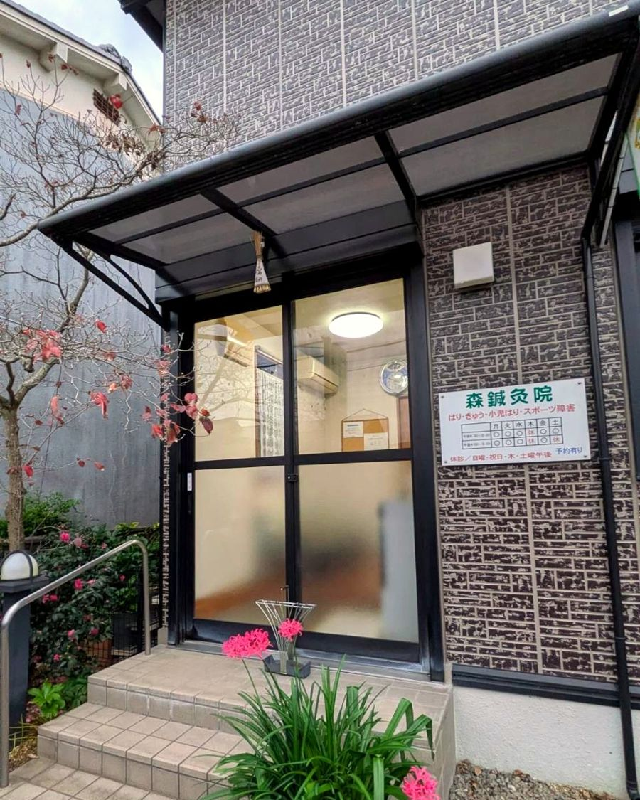
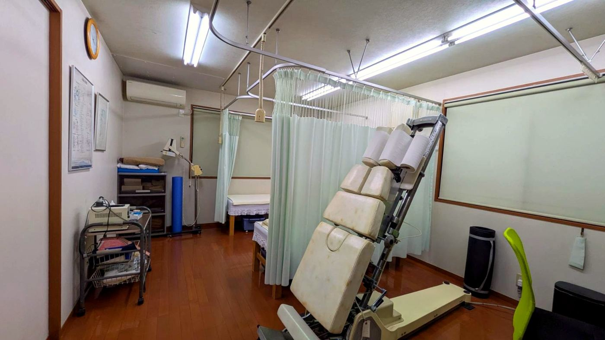
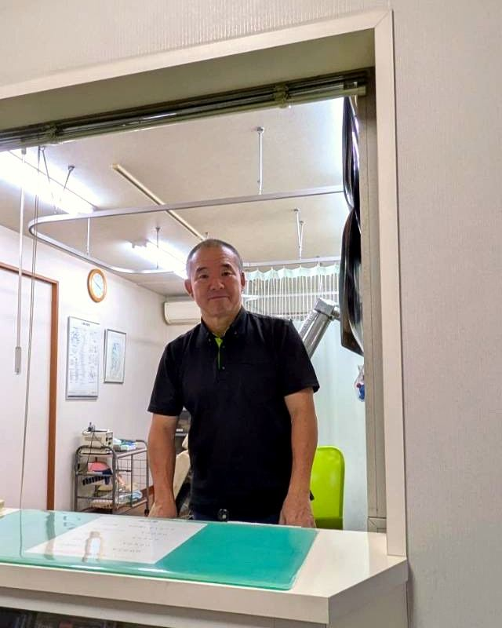
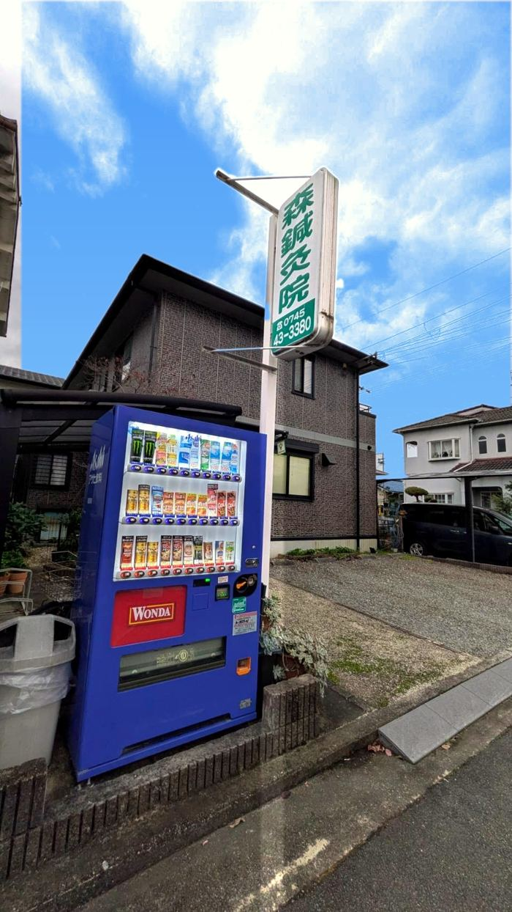
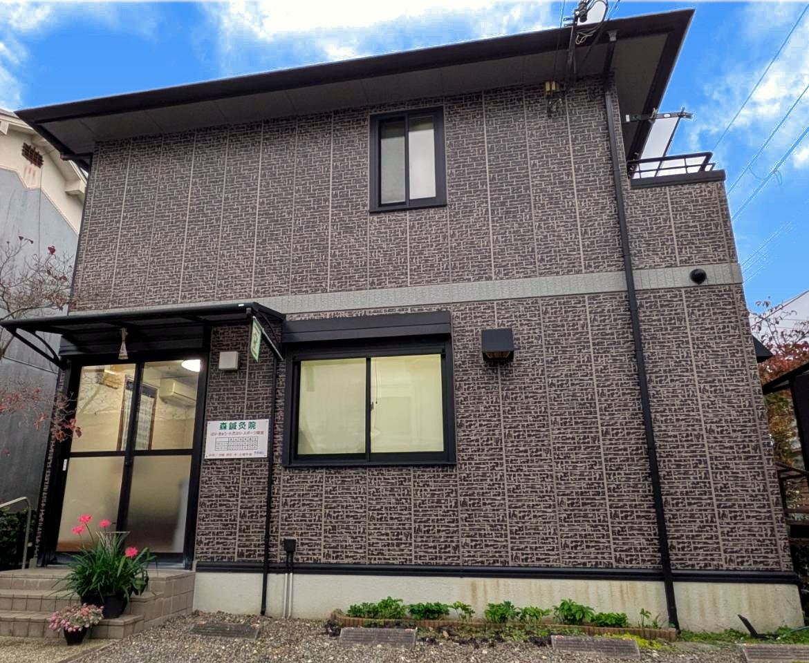

スポーツをしている方
部活動に打ち込む中学生・高校生や、社会人でスポーツを続けている方が多く通われています。練習や試合の合間の、体のメンテナンスにご利用ください。
開院20年以上
部活動やスポーツに打ち込む学生さんから、お仕事帰りの方、ご年配の方まで。お一人おひとりのお話をていねいにうかがってから施術を行います。

Patients
部活動に打ち込む中学生・高校生や、社会人でスポーツを続けている方が多く通われています。練習や試合の合間の、体のメンテナンスにご利用ください。
デスクワークや立ち仕事で、体の疲れが気になる方。平日は20時まで受け付けているので、お仕事帰りにも通いやすい時間です。
開院から20年以上、石見の地域の方々に通っていただいています。はり・きゅうが初めての方も、お気軽にご相談ください。
First Visit

お電話でご予約ください。当日のご予約も空きがあれば承ります。初回は1時間ほどお時間をみておいてください。
気になるところ、お仕事や日常生活、スポーツのことなどをお聞きします。
状態に合わせて鍼・お灸を行います。内容はその都度ご説明してから始めます。
自宅でできるストレッチやトレーニング、次回の来院の目安をお伝えします。
使う鍼は髪の毛ほどの細さで、注射針とはまったく違います。多くの方が「思っていたより痛くない」とおっしゃいます。不安な方は、刺激の弱い方法から始めますのでお伝えください。
肩や腰、膝などを出しやすい、動きやすい服装でお越しください。
症状によっては、医師の同意書があれば保険が使える場合があります。詳しくはお問い合わせください。
お体の状態やご希望によって異なります。初回の施術後に、目安をご説明します。
Price
| 初診料 | 1,000円 |
|---|---|
| 全身施術（約1時間15分） | 5,500円 |
| 部分施術（約1時間） | 4,000円 |
| 学生 | 2,500円 |
保険での施術について
保険施術の詳細は、お気軽にお尋ねください。
お電話 0745-43-3380
※ 初回はお話をうかがう時間を含めて、1時間ほどかかります。
※ 前回のご来院から1年以上あいた場合は、あらためて初診料がかかります。
※ 料金はすべて税込です。

Staff
院長 森 健晴
はり師・きゅう師。開院から20年以上、石見の地で地域の皆さまの体と向き合ってきました。学生さんからご年配の方まで、一人ひとりの体に合わせて施術を行います。どうぞお気軽にご相談ください。
Access
| 月 | 火 | 水 | 木 | 金 | 土 | 日 | |
|---|---|---|---|---|---|---|---|
| 8:30〜12:00 | ● | ● | ● | － | ● | ● | － |
| 16:00〜20:00 | ● | ● | ● | － | ● | － | － |
休診日：木曜・日曜・祝日・土曜午後


「こんな症状でも大丈夫？」というご相談だけでもお気軽にどうぞ。
お電話はこちら0745-43-3380施術中は電話に出られないことがあります。少し時間をおいておかけ直しください。